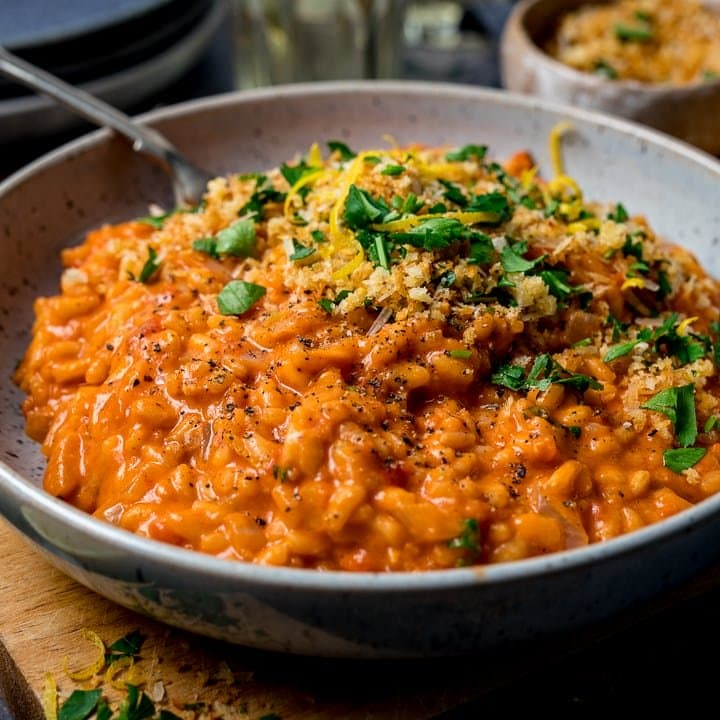

Kuchnia Włoska
Kuchnia Włoska
Najlepsza kuchnia na świecie!

Spaghetti Carbonara
Składniki:
- 5 L Wody
- Szczypta soli kamiennej
- 300 gramów Makaronu spaghetti lub Spaghettoni/Rigatoni/Paccheri
- 150 gramów Guanciale - Polędwica wieprzowa lub Pancetta
- 200 gramów Serka Pecorino (2 szklanki)
- 4 Jajka
- Pieprz
Kroki:
- Spaghetti carbonara robi się bardzo szybko, więc na początek zagotuj wodę do gotowania makaronu w dużym garnku.
- Gotuj makaron zgodnie z instrukcjami na opakowaniu pod względem czasu, upewniając się, że makaron jest al dente.
- Zdejmij skórę z guanciale (upewniając się, że zostawiasz pieprzony/prażony skórę), a następnie pokrój je w cienkie paski.
- Na gazie włącz niewielki do średniego ogień i umieść dużą patelnię. Dla idealnego przepisu na spaghetti carbonara dodaj guanciale na patelnię, pozwól mu gotować się bardzo powoli, a sam utworzy swoje pyszne oleje.
- Doprowadź guanciale do wrzenia i delikatnie je usmaż.
- Weź swoją misę i dodaj 4 jajka, następnie energicznie je ubij.
- Następnie dodaj ser pecorino, a także dużo pieprzu przed dokładnym wymieszaniem. To stworzy pyszny sos, który dodasz do makaronu.
- Kiedy makaron ugotuje się do preferowanego smaku, za pomocą cążek wyjmij makaron z wrzącej wody i dodaj go bezpośrednio na patelnię, upewniając się, że małe kropelki wody mieszają się również z patelnią.
- Wyłącz płytę grzejną, aby makaron i guanciale przestali się gotować.
- Następnie, za pomocą chochli, pobierz pełną chochlę wody z garnka i dodaj ją do jajka i kremu serowego, następnie dokładnie wymieszaj widelcem.
- Teraz ponownie włącz płytę na małym ogniu, dodaj trochę wody z makaronu na patelnię, a teraz wlej krem na wierzch, następnie wymieszaj to za pomocą cążek - bądź delikatny, ale szybki! Pozwól mu się przegotować, ale nie pozwól, aby jajka zrobiły się na jajecznicy, bo wtedy skończysz z frittatą!
- Cały czas mieszaj krem, aż zacznie lekko gęstnieć, wymieszaj go i podawaj.

Bolognese
Składniki:
- 1 Czerwona cebula, posiekana
- 3 Łodygi selera, posiekane
- 3 Marchewki, posiekane
- 500 gram Mielonej wieprzowiny
- 300 gram Mielonego mięsa wołowego
- 200 gram Mielonej cielęciny
- 1 l Italian tomato passata (przecieru pomidorowego)
- 400 gram Pomidorów, obranych
- 150 gram Koncentratu pomidorowego
- Oliwa z oliwek extra virgin
- 1 szklanka Czerwonego wina
- 1 kubek Pełnotłustego mleka
- Sól i pieprz
- 1-2 litry Wody do zagotowania w czajniku
Kroki:
- Umieść duży garnek na kuchence (średnie ogrzewanie), dodaj obficie oliwy z oliwek extra virgin i po rozgrzaniu dodaj cebulę.
- Gdy cebula zacznie nabierać połysku i złotego koloru, dodaj marchew, seler, i wymieszaj, pozostawiając do gotowania przez 4-5 minut.
- Następnie dodaj ½ szklanki czerwonego wina (118 ml) do autentycznego sosu bolońskiego i pozostaw do duszenia na małym ogniu przez kilka minut lub do momentu, aż wino wyparuje.
- Dodaj mielone mięso i rozdrobnij je za pomocą drewnianej łyżki i/lub widelca, doprawiając tylko solą i pieprzem.
- Czasami mieszaj, aby mieć pewność, że mięso jest dokładnie ugotowane, pozostawiając je do zrumienienia.
- Gdy woda wyparuje, wymieszaj drugą połowę szklanki czerwonego wina.
- Całkowity czas gotowania autentycznego sosu bolońskiego to około 4-5 godzin, co sprawi, że mięso stanie się bardziej miękkie.
- Po ponownym odparowaniu wina, wymieszaj przecier pomidorowy, koncentrat i obrane pomidory.
Rozgnieć pomidory, używając drewnianej łyżki podczas mieszania.
- Po 1,5 godziny dodaj do garnka 1 litr/4,2 szklanki wrzącej wody i wymieszaj. W tym momencie spróbuj sosu i dopraw solą według własnego gustu - dodaj tylko, jeśli chcesz więcej, ponieważ żadne inne przyprawy nie są potrzebne do autentycznego sosu bolońskiego!
- Następnie, po kolejnej godzinie, dodaj więcej wody - sztuczką jest dodawanie wody, gdy sos wydaje się suchy, co zagęści mieszaninę i pozwoli mięsu stanie się bardziej miękkie.
Pozwól sosowi lekko bulgotać, ale niech nie tryska wszędzie. Jeśli zbyt mocno się gotuje, zmniejsz ogień.
- Gdy sos jest jeszcze 30 minut od gotowości, zagotuj 5 litrów wody w drugim garnku, dodaj łyżkę soli kamiennej, pozostawiając ją do rozpuszczenia.
- Po gotowaniu sosu przez około 5 godzin, zdejmij go z ognia i pozostaw do odpoczynku.
Dodaj wybrany makaron do gotującej się wody i gotuj zgodnie z instrukcjami na opakowaniu.
- Podczas gotowania makaronu, przygotuj dużą patelnię do mieszania!
- Następnie dodaj filiżankę pełnotłustego mleka do sosu i wymieszaj, po czym postaw go z powrotem na kuchence na 5 minut.
- Na koniec, umieść patelnię na kuchence na niskim ogniu, dodaj obfite łyżki (lub dwie!) sosu bolońskiego, pokrywając dno.
- Następnie dodaj odcedzony makaron do patelni wraz z filiżanką wody z makaronu.
Wymieszaj, aż makaron będzie całkowicie pokryty, a następnie dodaj kolejną obfitą ilość autentycznego sosu bolońskiego i ponownie wymieszaj.

Risotto
Składniki:
- ½ Cebuli brunatnej, posiekana na małe kawałki
- 1 pęczek Pietruszki, świeża i posiekana
- Oliwa z oliwek extra virgin Tyle, ile potrzeba
- 400 gram Grzybów borowików
- 300 gram Ryżu Carnaroli
- ½ szklanki Białego wina
- 50 gram Masła
- 50 gram Serka Parmezanu Reggiano
- 1 litr Wywaru warzywnego
- 1 łyżka Soli
Kroki:
- Umieść dużą patelnię na średnim ogniu. Dodaj 3 łyżki oliwy z oliwek extra virgin.
- Pozostaw, aby się lekko podgrzało, a następnie dodaj grzyby, mieszając je przez olej i dusząc.
- Dodaj szczyptę soli i połowę świeżo posiekanej pietruszki, następnie dokładnie wymieszaj.
- Gotuj przez około 15 minut, mieszając co jakiś czas drewnianą łyżką, aby upewnić się, że są miękkie i soczyste.
- Weź dużą garnek lub głęboką patelnię i postaw na średnim ogniu.
Dodaj posiekaną cebulę i pozostaw do duszenia, aż lekko się zezłoci. Delikatnie wymieszaj je przez olej za pomocą drewnianej łyżki i gotuj przez około 10 minut.
- Kiedy cebula zacznie lekko zmieniać kolor na złoty, sprawdź grzyby - powinny być już gotowe! Wyłącz kuchenkę i odstaw je na bok.
- Następnie dodaj ryż do patelni (z cebulą) i wymieszaj (zawsze używając drewnianej łyżki!). Ryż musi lekko przypiekać się na patelni przez około 4 minuty - często mieszaj!
- Po ¾ minuty dodaj ½ szklanki wina i śledź czas. Od tego momentu gotuj zgodnie z czasem podanym na opakowaniu - oczywiście smakując, aby się upewnić!
- Wymieszaj ryż z winem, mieszając go, a od tego momentu chcesz, aby ryż pozostał wilgotny, więc po jego odparowaniu zacznij dodawać bulion warzywny, jedną chochlę naraz.
- Po dodaniu bulionu pozostaw go do odparowania, zanim dodasz kolejną porcję. Kluczowy krok: CIĄGLE MIESZAĆ przez cały ten proces i nie zwiększać temperatury, ryż najlepiej gotować delikatnie i wolno.
- Kilka minut przed końcem (zalecanego) czasu gotowania dodaj grzyby (zostawiając małą porcję na bok) i dodaj kolejne ½ chochli bulionu.
- Wymieszaj, a następnie dodawaj więcej bulionu, ponieważ grzyby szybko wchłaniają płyn. Ciągle mieszaj!
- W tym momencie spróbuj ryżu, aby upewnić się, że jest dobrze ugotowany, a następnie usuń z ognia, gdy zadowolony jesteś z konsystencji.
- Natychmiast dodaj masło, a podczas gdy się rozpuszcza, wymieszaj z startym parmezanem reggiano (śmiało dodaj więcej!). Mieszaj, aż oba składniki całkowicie się rozpuszczą... następnie podawaj!

Pizza Margherita
Składniki:
- 1 kg Mąki do pizzy Napoletanej Le 5 Stagioni (około 4,25 szklanki)
- 600 ml Wody (około 2,5 szklanki), temperatura pokojowa
- 2 gramy Świeżych drożdży
- 30 gramów Soli morskiej (2 łyżki)
- 1 puszka Pomidorów San Marzano 400 g/14 uncji
- Garść sera Pecorino Romano
- 100 gramów Mozzarelli Fior di latte
- Sól
- Oliwa z oliwek extra virgin
Kroki:
- KROK PIERWSZY: JAK ZROBIĆ CIASTO NA PIZZĘ NAPOLETANĘ DO KLASYCZNEJ PIZZY MARGHERITA
- Wlej 600 ml wody do miski i rozpuść sól morską, mieszając ją rękoma.
Dodaj 100 g mąki do wody i wymieszaj, używając rąk.
- Gdy mąka się rozpuści, dodaj świeże drożdże, rozbijając je ponownie w wodzie, aż znikną!
- W tym momencie stopniowo dodawaj mąkę, mieszając, a kiedy ciasto stanie się gęstsze i zacznie się formować, przenieś je na blat (nie zapomnij wcześniej posypać blatu mąką!)
- Odetnij nadmiar lepkiego ciasta z rąk, pozwalając mu spaść do miski, i wyrabiaj je przez ciasto.
Aby wyrabiać, naciskaj do przodu i zaginać z powrotem, powtarzając ten proces i pracując ciasto, aż uzyskasz miękką i elastyczną konsystencję.
- Kiedy jesteś zadowolony z ciasta, przykryj je i pozostaw do odpoczynku przez 18 godzin w temperaturze pokojowej.
- Po tym czasie stwórz kulki pizzy o wadze 270 g. Umieść je na tacy, przykryj i pozostaw do wyrośnięcia przez kolejne 4-6 godzin.
- Podawaj natychmiast, posypując dodatkowym parmezanem i pieprzem.
- KROK DRUGI: ROZCIĄGANIE KLASYCZNEGO CIASTA NA PIZZĘ MARGHERITA
- Posyp trochę mąki na wierzch deski.
Wyjmij jedną z kulek z tacy, używając niewielkiej ilości mąki po bokach, aby nie przywierała – do rąk i tacy – i umieść na blacie.
- To ciasto jest bardzo elastyczne, więc łatwo je rozciągniesz. Zacznij tworzyć okrągłą podstawę, pracując palcami od dołu aż do góry, upewniając się, że zostawiasz obrzeże 1 cm po obwodzie.
- Obróć pizzę do góry nogami i powtórz proces. To spycha całe powietrze na dół i do krawędzi.
- Powtórz to – delikatnie – dwukrotnie z każdej strony, następnie podnieś podstawę, przekręć ją w jedną rękę i na blat, pomagając jej rozciągnąć się dalej i przyjąć formę koła.
- KROK TRZECI: PRZYGOTOWANIE KLASYCZNEJ PIZZY MARGHERITA
- Zacznij od wylania puszki pomidorów San Marzano do miski. Można je rozgnieść rękoma lub mikserem ręcznym, starając się uzyskać gęstą konsystencję, więc nie przesadzaj z nimi!
- Dodaj szczyptę soli i wymieszaj przez bazylie, całe lub rozrywając kawałki rękami.
- Wlej trochę sosu z pomidorów San Marzano na podstawę i rozprowadź go za pomocą spodniej strony łyżki.
- Pokrój ser Fior di latte mozzarella na kawałki i rozłóż ich obficie na wierzchu pysznego sosu San Marzano - idealne połączenie do klasycznej pizzy margherity!
- Posyp na wierzchu Pecorino Romano i dodaj kilka listków bazylii przed ostatnim skropieniem oliwą z oliwek extra virgin.
- KROK CZWARTY: JAK PIEC KLASYCZNĄ PIZZĘ MARGHERITA
- Korzystając z pieca opalanego drewnem o temperaturze 450°C, pizzę należy piec maksymalnie przez 90 sekund.
- Należy ją obrócić o 180° w połowie czasu - koniecznie sprawdź spód między czasie, aby upewnić się, że nie przypali się.

Tiramisu
Składniki:
- 2 świeże organiczne jajka, ekstra duże
- 1 opakowanie sera mascarpone, 250 g
- 100 gramów biszkoptów Savoiardi
- 2 łyżki białego cukru
- 350 ml kawy espresso, 1 1/2 szklanki, przygotowanej wcześniej i ostudzonej
- 1 tabliczka czekolady gorzkiej lub mlecznej
- Czekolada w proszku
- Cukier puder
Kroki:
- Zacznij od przygotowania świeżej kawy i pozwolenia jej wystarczająco długo ostygnąć. Gdy kawa ostygnie, nalej ją do miski.
- Kolejnym krokiem, gdy kawa ostygnie, jest oddzielenie 2 białek jajek od żółtek, umieszczenie ich w osobnych miseczkach, a następnie dodanie do każdej jednej łyżki białego cukru.
- Teraz ubijaj każdą miseczkę osobno za pomocą miksera ręcznego. Możesz także ubijać te składniki ręcznie, ale wynik jest znacznie puszystszy!
- Białka jajek powinny ładnie spienić się - ale upewnij się, że nie przesadzisz, bo się rozbiją i zsiądą.
- Dodaj odcedzone spaghetti do patelni z boczkiem, mieszaj, aby makaron pokrył się tłuszczem z boczku.
- Podziel mascarpone na dwie równe części, dodając połowę do mieszanki z żółtkiem, a drugą połowę do miseczki z białkiem jajka.
- Za pomocą łopatki delikatnie wymieszaj mascarpone, zaczynając od miski z białkiem jajka.
- Dla autentycznego przepisu na tiramisu musisz użyć biszkoptów Savoiardi lub Lady Fingers. Zamocz kilka jednocześnie w misce z kawą, zwilżając obie strony jednocześnie, przytrzymując przez 3 sekundy, zanim umieścisz je w naczyniu żaroodpornym lub prostokątnym.
- Ułóż biszkopty blisko siebie, delikatnie dociskając je do siebie, aby nie było przerw, i upewnij się, że łamiesz ewentualne biszkopty i używasz ich do wypełnienia rogów.
- Po utworzeniu dolnej warstwy zgodnie z autentycznym przepisem na tiramisu, powoli polej mieszaniną zawierającą żółtko jajka, używając łopatki do rozprowadzenia jej w miejscach, gdzie są przerwy.
- Następnie posyp trochę proszku kakao na wierzch, aby był całkowicie pokryty, przed startym kawałkiem gorzkiej czekolady (możesz nawet po prostu grubo go posiekać, dodając go oszczędnie do warstwy).
- Teraz powtórz krok 8, tworząc kolejną warstwę biszkoptów Savoiardi maczanych w kawie, zanim je zalejesz białą mieszanką.
- Posyp kakao na wierzchu, dodaj ponownie startą czekoladę, a następnie umieść swoje dzieło według tego autentycznego przepisu na tiramisu w lodówce na całą noc.
- Zostaw tiramisu w lodówce do stężenia przez maksymalnie 24 godziny dla najlepszych efektów. Im dłużej zostawisz, tym lepiej się zetnie!